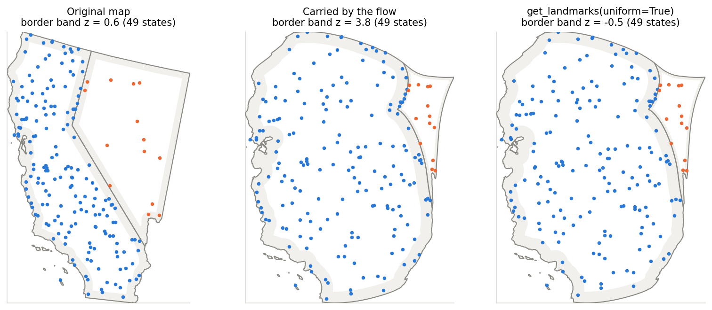
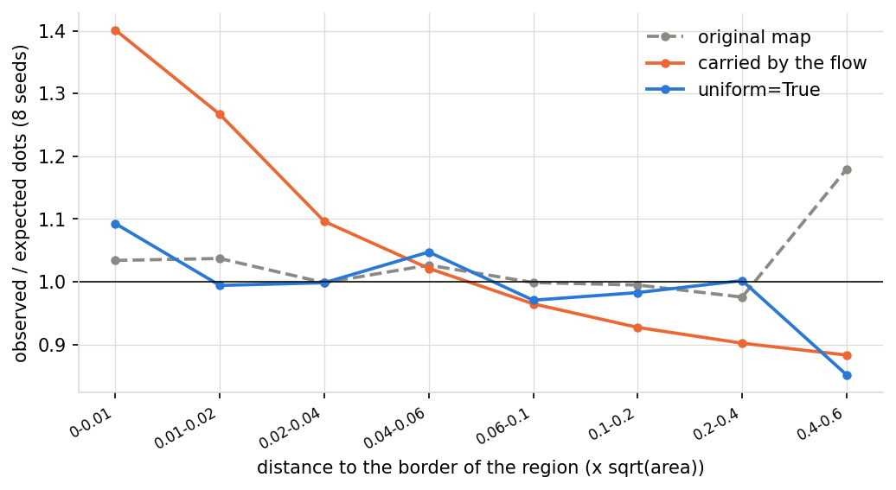

Probe points (MorphOptions.landmark_probes) make the correction available for lines, polygons, other point sets and displacement coordinates. The morph sums the divergence of the velocity field along the path of every landmark vertex at no measurable cost; every snapshot stores the area scaling, and Cartogram.get_landmarks(iteration, uniform=True) remaps the distance of point landmarks to the border of their region so that landmarks that were uniform before the morph are uniform again, at any saved iteration. The distribution of the distance to the border is computed deterministically (distance transform, once per cartogram), so the correction changes smoothly between frames of an animation. On the states with 8 seeds of about 1,480 dots the mean border-band z-score is 4.28 for the carried dots, 0.47 with uniform=True and 0.63 on the original map; the median dot moves 0.8 % of the width of its region.
make_figures.py regenerates the figures and data/tables.md, frames.py the table of the frames; they use get_landmarks(uniform=True) of the library. The cost: within the same checkout, disabling the accumulation does not change the morph time (0.229 against 0.228 s at grid 256 and 0.53 against 0.54 s at grid 512, 1,480 dots, minimum of 5 runs); get_landmarks(uniform=True) takes 0.35 s the first time (it includes the distribution of the distance to the border of every region) and 0.054 s afterwards for these dots. More on the mechanism, the measurements and the alternatives that were tried is on exploration-border-drift.
Frames: 29 snapshots of one morph (every 4 iterations), correction vector of every corrected dot over the frames. Second difference of the correction: 0.008 % of the width of the region in the median, 0.12 % at the 95th percentile; increment of the correction between two frames relative to the carried motion: 0.011 in the median, 0.135 at the 95th percentile. A version with the distribution of the distance taken from 400 random sample points per region had 0.14 % and 1.1 % and 0.66 at the 95th percentile.
| seed | original map | carried by the flow | get_landmarks(uniform=True) | shift: median / 95th pct (x sqrt(area)) |
|---|---|---|---|---|
| 0 | -0.11 | 3.19 | -0.23 | 0.0069 / 0.0265 |
| 1 | 2.31 | 6.14 | 3.07 | 0.0078 / 0.0287 |
| 2 | 0.98 | 3.77 | 0.99 | 0.0073 / 0.0305 |
| 3 | 0.98 | 5.56 | 1.68 | 0.0074 / 0.0307 |
| 4 | -0.29 | 3.48 | -0.52 | 0.0077 / 0.0292 |
| 5 | 1.15 | 5.22 | 0.52 | 0.0079 / 0.0329 |
| 6 | -0.58 | 3.13 | -1.27 | 0.007 / 0.033 |
| 7 | 0.63 | 3.77 | -0.46 | 0.0084 / 0.0303 |
| mean | 0.63 | 4.28 | 0.47 | 0.0076 / 0.0302 |
| dots (observed / expected, mean over 8 seeds) | 0-0.01 | 0.01-0.02 | 0.02-0.04 | 0.04-0.06 | 0.06-0.1 | 0.1-0.2 | 0.2-0.4 | 0.4-0.6 |
|---|---|---|---|---|---|---|---|---|
| original | 1.03 | 1.04 | 1.00 | 1.03 | 1.00 | 0.99 | 0.98 | 1.18 |
| carried | 1.40 | 1.27 | 1.10 | 1.02 | 0.96 | 0.93 | 0.90 | 0.88 |
| uniform | 1.10 | 1.03 | 0.97 | 1.00 | 0.99 | 1.00 | 0.98 | 0.91 |
probes.py writes data/probes.json. 0 probes: the dots measure the crowding themselves.
| probes per region | mean z (sd over 8 seeds) | get_landmarks(uniform=True), s | morph, s |
|---|---|---|---|
| 0 | 0.47 (1.32) | 0.338 | 0.24 |
| 25 | 0.78 (1.06) | 0.337 | 0.255 |
| 50 | 0.11 (1.17) | 0.343 | 0.258 |
| 100 | 1.02 (1.23) | 0.362 | 0.258 |
Frames with 50 probes per region (29 frames): second difference of the correction 0.008 % / 0.132 % of the width (median / 95th percentile), increment relative to the carried motion 0.01 / 0.177, first call 0.375 s, later calls 0.079 s. The z-scores of the four rows differ by less than their noise; a larger number of probes does not improve them.

California (blue) and Nevada (orange), dot seed 7. Left: the original map. Middle: the dots carried by the flow crowd the border band (z 3.8 over all states). Right: the same dots after get_landmarks(uniform=True).

Pooled distance profile of the dots on the 49 states (observed / expected, 8 seeds): flat on the original map, 1.4 times the expected number in the first 1 % of the distance after the flow, flat again after the correction.